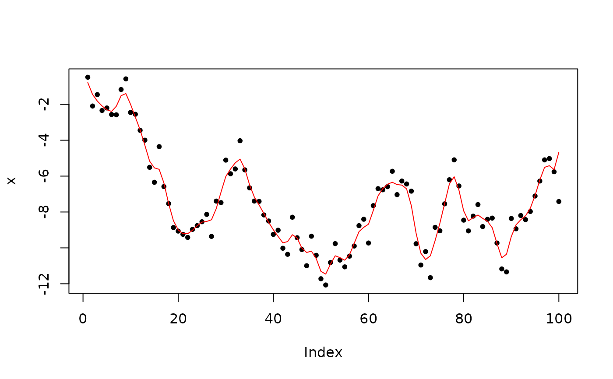
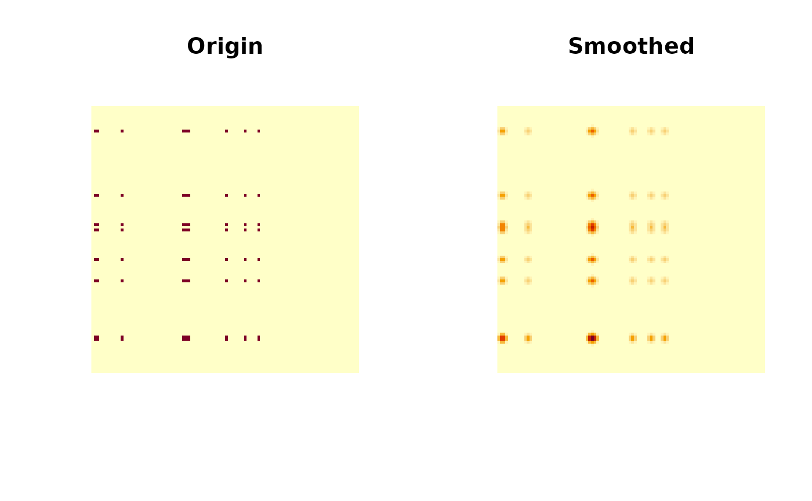

Use the 'Fast-Fourier' transform to compute the convolutions of two data
with zero padding. This function is mainly designed for image convolution.
For forward and backward convolution/filter, see filtfilt.
Value
Convolution results with the same length and dimensions as x.
If x is complex, results will be complex, otherwise results will
be real numbers.
Details
This implementation uses 'Fast-Fourier' transform to perform
1D, 2D, or 3D convolution. Compared to implementations
using original mathematical definition of convolution, this approach is
much faster, especially for image and volume convolutions.
The input x is zero-padded beyond edges. This is most common in image
or volume convolution, but less optimal for periodic one-dimensional signals.
Please use other implementations if non-zero padding is needed.
The convolution results might be different to the ground truth by a precision
error, usually at 1e-13 level, depending on the 'FFTW3'
library precision and implementation.
Examples
# ---- 1D convolution ------------------------------------
x <- cumsum(rnorm(100))
filter <- dnorm(-2:2)
# normalize
filter <- filter / sum(filter)
smoothed <- convolve_signal(x, filter)
plot(x, pch = 20)
lines(smoothed, col = 'red')

# ---- 2D convolution ------------------------------------
x <- array(0, c(100, 100))
x[
floor(runif(10, min = 1, max = 100)),
floor(runif(10, min = 1, max = 100))
] <- 1
# smooth
kernel <- outer(dnorm(-2:2), dnorm(-2:2), FUN = "*")
kernel <- kernel / sum(kernel)
y <- convolve_image(x, kernel)
oldpar <- par(mfrow = c(1,2))
image(x, asp = 1, axes = FALSE, main = "Origin")
image(y, asp = 1, axes = FALSE, main = "Smoothed")

par(oldpar)